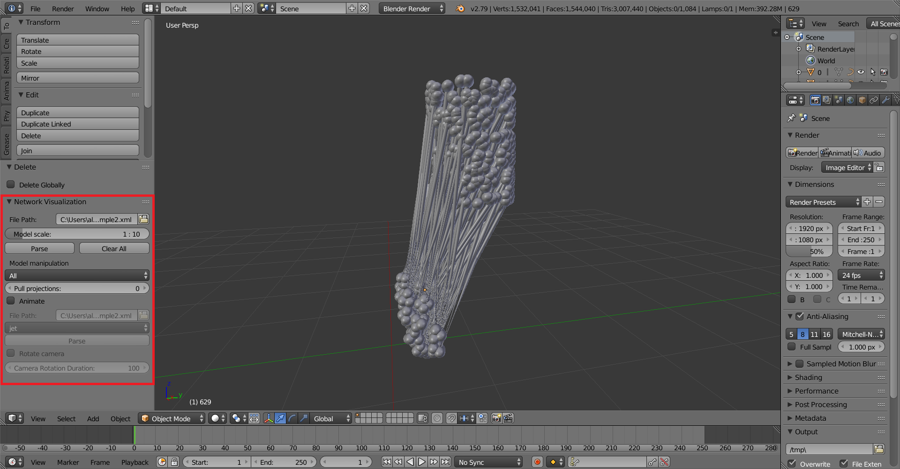

Getting started¶
Once the AddOn is installed and activated, you should see the AddOn’s panel. After your model has been parsed, additional options unfold, such as model manipulation or adding animation.
{kind=link}
Generating 3D cell models from NeuroML2¶
The Add-On allows generating 3D models of cells from .cell.nml files. These files can be parsed directly or as includes in .net.nml files.

Source file for the model: http://www.opensourcebrain.org/projects/blue-brain-project-showcase/models
Generating 3D network models from NeuroML2¶
The NeuroML2 files of extension .net.nml or .xml can be parsed with the AddOn.
Todo
- Different measurement units.
- Taper curve for all.
- List of bevel objects.
{kind=link}
Model manipulation¶
Once the model has been created, there are multiple posibilities to draw attention to a specific population of interest:
Todo
Allow different pulling
- pull projections between all populations into a “sand-clock” form.
- assign random colors to specific populations.

Animation¶
Todo
- Fix position of the empty.
- List of materials.
Animation can be added only after the network model was already parsed. The extentions .st and .cmp are supported. These file consists of a description of which neuron fires at which time point. You can also choose the color map as well as set the camera to rotate around the model.